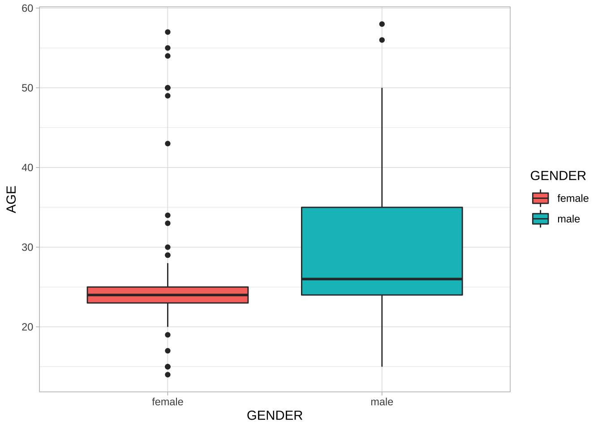
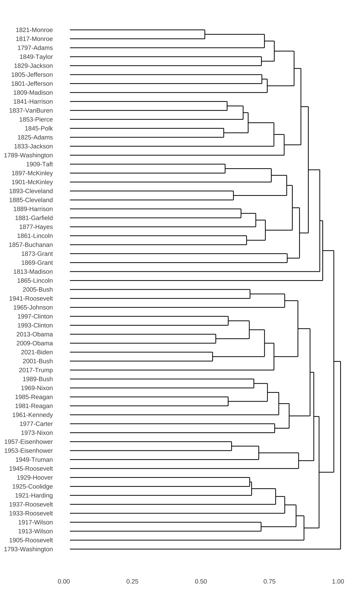
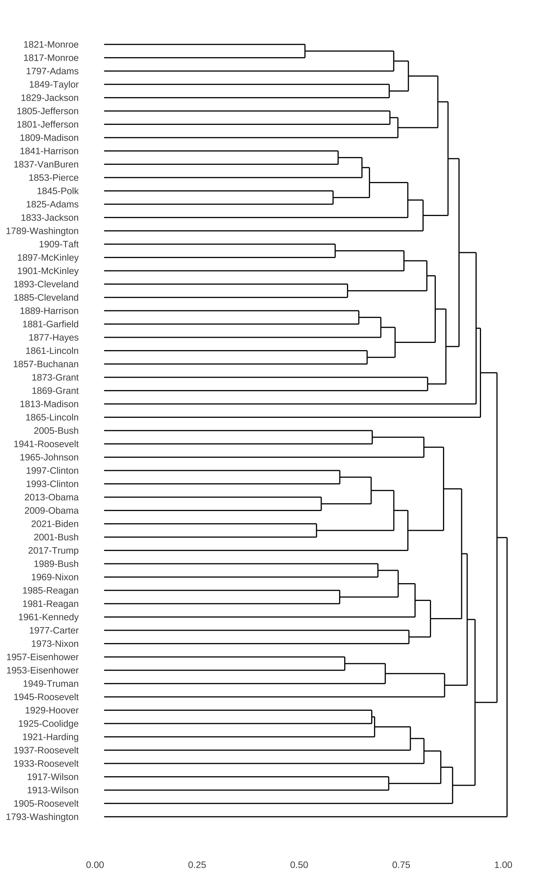

Chapter 8 Chinese Text Processing
In this chapter, we will discuss one of the most important issues in Chinese language/text processing, i.e., word segmentation. When we discuss English parts-of-speech tagging in Chapter 5, it is easy to do the word tokenization in English as the word boundaries in English are more clearly delimited by whitespaces. Chinese, however, does not have whitespaces between characters, which leads to a serious problem for word tokenization.
This chapter is devoted to Chinese text processing. We will look at the issues of word tokenization and talk about the most-often used library, jiebaR, for Chinese word segmentation. Also, we will include several case studies on Chinese text processing. In later Chapter 9, we will introduce another segmenter for Taiwan Mandarin, i.e., the CKIP Tagger, which comes with more functionalities.
library(tidyverse)
library(tidytext)
library(quanteda)
library(stringr)
library(jiebaR)
library(readtext)8.1 Chinese Word Segmenter jiebaR
8.1.1 Start
First, if you haven’t installed the library jiebaR, you may need to install it manually:
This is the version used for this tutorial.
## [1] '0.11'Now let us take a look at a quick example. Let us assume that in our corpus, we have collected only one text document, with only a short paragraph.
text <- "綠黨桃園市議員王浩宇爆料，指民眾黨不分區被提名人蔡壁如、黃瀞瑩，在昨（6）日才請辭是為領年終獎金。台灣民眾黨主席、台北市長柯文哲7日受訪時則說，都是按流程走，不要把人家想得這麼壞。"There are two important steps in Chinese word segmentation:
- initilzie a word segmenter object using
worker() - segment the texts using
segment()
## [1] "綠黨" "桃園市" "議員" "王浩宇" "爆料" "指民眾"
## [7] "黨" "不" "分區" "被" "提名" "人"
## [13] "蔡壁如" "黃" "瀞" "瑩" "在昨" "6"
## [19] "日" "才" "請辭" "是" "為領" "年終獎金"
## [25] "台灣民眾" "黨" "主席" "台北" "市長" "柯文"
## [31] "哲" "7" "日" "受訪" "時則" "說"
## [37] "都" "是" "按" "流程" "走" "不要"
## [43] "把" "人家" "想得" "這麼" "壞"To segment the document, text, you first initialize a segmenter seg1 using worker() and feed this segmenter to segment(jiebar = seg1)and segment text into words.
8.1.2 Settings
There are many different parameters you can specify when you initialize the segmenter worker(). You may get more detail via the documentation ?worker. Some of the important arguments include:
user = ...: This argument is to specify the path to a user-defined dictionarystop_word = ...: This argument is to specify the path to a stopword listsymbol = FALSE: Whether to return symbols (the default is FALSE)bylines = FALSE: Whether to return a list or not (crucial if you are usingtidytext::unnest_tokens())
seg1, we did not specify any arguments for worker(). Can youo tell what are the default settings for the parameters of worker()? Please try to create work() with different settings and see how the segmented results differ from each other.
8.1.3 User-defined dictionary
From the above example, it is clear to see that some of the words are not correctly identified by the current segmenter: for example, 民眾黨, 不分區, 黃瀞瑩, 柯文哲. It is always recommended to include a user-defined dictionary when doing the word segmentation because different corpora may have their own unique vocabulary. This can be done when you initialize the segmenter using worker(..., user = ...).
## [1] "綠黨" "桃園市" "議員" "王浩宇" "爆料" "指"
## [7] "民眾黨" "不分區" "被" "提名" "人" "蔡壁如"
## [13] "黃瀞瑩" "在昨" "6" "日" "才" "請辭"
## [19] "是" "為領" "年終獎金" "台灣" "民眾黨" "主席"
## [25] "台北" "市長" "柯文哲" "7" "日" "受訪"
## [31] "時則" "說" "都" "是" "按" "流程"
## [37] "走" "不要" "把" "人家" "想得" "這麼"
## [43] "壞"The format of the user-defined dictionary is a text file, with one word per line. Also, the default encoding of the dictionary is UTF-8. Please note that in Windows, the default encoding of a txt file created by Notepad may not be UTF-8.
Creating a user-defined dictionary may take a lot of time. You may consult 搜狗詞庫, which includes many domain-specific dictionaries created by others. However, it should be noted that the format of the dictionaries is .scel. You may need to convert the .scel to .txt before you use it in jiebaR. To do the coversion automatically, please consult the library cidian. Also, you need to do the traditional-simplified Chinese conversion as well. For this, you may consult the library ropencc in R.
8.1.4 Stopwords
When you initialize the segmenter, you can also specify a stopword list, i.e., words you do not need to include in the later analyses. For example, in text mining, functional words are usually less informative.
## [1] "綠黨" "桃園市" "議員" "王浩宇" "爆料" "指民眾"
## [7] "黨" "不" "分區" "被" "提名" "人"
## [13] "蔡壁如" "黃" "瀞" "瑩" "在昨" "6"
## [19] "才" "請辭" "為領" "年終獎金" "台灣民眾" "黨"
## [25] "主席" "台北" "市長" "柯文" "哲" "7"
## [31] "受訪" "時則" "說" "按" "流程" "走"
## [37] "不要" "把" "人家" "想得" "這麼" "壞"8.1.5 POS Tagging
So far we haven’t seen the parts-of-speech tags provided by the word segmenter. If you need the POS tags of the words, you need to specify the argument type = "tag" when you initialize the worker().
seg4 <- worker(type = "tag", user = "demo_data/dict-ch-user-demo.txt", stop_word = "demo_data/stopwords-ch-demo.txt")
segment(text, seg4)## n ns n x n n x
## "綠黨" "桃園市" "議員" "王浩宇" "爆料" "指" "民眾黨"
## x p v n x x x
## "不分區" "被" "提名" "人" "蔡壁如" "黃瀞瑩" "在昨"
## x d v x n x x
## "6" "才" "請辭" "為領" "年終獎金" "台灣" "民眾黨"
## n ns n x x v x
## "主席" "台北" "市長" "柯文哲" "7" "受訪" "時則"
## zg p n v df p n
## "說" "按" "流程" "走" "不要" "把" "人家"
## x r a
## "想得" "這麼" "壞"The following table lists the annotations of the POS tagsets used in jiebaR:
8.1.6 Default
You can check the dictionaries and the stopword list being used by jiebaR in your current enviroment:
# show files under `dictpath`
dir(show_dictpath())
# Check the default stop_words list
# Please change the path to your default dict path
scan(file="/Library/Frameworks/R.framework/Versions/3.6/Resources/library/jiebaRD/dict/stop_words.utf8",
what=character(),nlines=50,sep='\n',
encoding='utf-8',fileEncoding='utf-8')8.1.7 Reminder
When we use segment() as a tokenization method in the unnest_tokens(), it is very important to specify bylines = TRUE in worker(). This setting would make sure that segment() takes a text-based vector as input and returns a list of word-based vectors of the same length as output.
NB: When bylines = FALSE, segment() returns a vector.
seg_byline_1 <- worker(bylines = T)
seg_byline_0 <- worker(bylines = F)
(text_tag_1 <- segment(text, seg_byline_1))## [[1]]
## [1] "綠黨" "桃園市" "議員" "王浩宇" "爆料" "指民眾"
## [7] "黨" "不" "分區" "被" "提名" "人"
## [13] "蔡壁如" "黃" "瀞" "瑩" "在昨" "6"
## [19] "日" "才" "請辭" "是" "為領" "年終獎金"
## [25] "台灣民眾" "黨" "主席" "台北" "市長" "柯文"
## [31] "哲" "7" "日" "受訪" "時則" "說"
## [37] "都" "是" "按" "流程" "走" "不要"
## [43] "把" "人家" "想得" "這麼" "壞"## [1] "綠黨" "桃園市" "議員" "王浩宇" "爆料" "指民眾"
## [7] "黨" "不" "分區" "被" "提名" "人"
## [13] "蔡壁如" "黃" "瀞" "瑩" "在昨" "6"
## [19] "日" "才" "請辭" "是" "為領" "年終獎金"
## [25] "台灣民眾" "黨" "主席" "台北" "市長" "柯文"
## [31] "哲" "7" "日" "受訪" "時則" "說"
## [37] "都" "是" "按" "流程" "走" "不要"
## [43] "把" "人家" "想得" "這麼" "壞"## [1] "list"## [1] "character"8.2 Chinese Text Analytics Pipeline
In Chapter 4, we have talked about the work pipeline for normal English texts processing, as shown below:
Figure 8.1: English Text Analytics Flowchart
For Chinese texts, the work flow is pretty much the same. We process the Chinese data in the tidy structure framework.
Because the current Chinese word segmenter jiebaR does not return the results in a tidy structure format, the most important trick is that when tokenizing the raw texts using unnest_tokens(), we need to specify our own tokenzier for the argument token = ... in the unnest_tokens().
Figure 8.2: Chinese Text Analytics Flowchart
It is important to note that when we specify a self-defined token function, this function should take a character vector (i.e., a text-based vector) and return a list of character vectors (i.e., word-based vectors) of the same length.
In other words, when initializing the Chinese word segmenter, we need to specify the argument byline = TRUE for worker(byline = TRUE).

- So based on our simple corpus example above, we first transform the character vector
textinto acorpusobject—text_corpus. With this, we can applyquanteda::summary()andquanteda::kwic()with thecorpusobject.
We can also trabsfom the corpus object into a text-based tidy DF using tidy(). Also, we generate an unique index for each row using row_number().
## Tokens consisting of 1 document.
## text1 :
## [1] "綠黨" "桃園市" "議員" "王" "浩" "宇" "爆" "料"
## [9] "，" "指" "民眾" "黨"
## [ ... and 55 more ]- Second, we initialize the
work()for tokenization.
# initialize segmenter
my_seg <- worker(bylines = T, user = "demo_data/dict-ch-user-demo.txt", symbol=T)- Finally, we use
unnest_tokens()to tokenize texts into words fortext_corpus_tidy. Specifically, we tokenize the texts included in thetextcolumn and unnest the tokens in thewordcolumn.
# tokenization
text_corpus_tidy_word <- text_corpus_tidy %>%
unnest_tokens(word,
text,
token = function(x) segment(x, jiebar = my_seg))
text_corpus_tidy_wordquantedaalso provides its own default word tokenization for Chinese texts. However, we cannot add own dictionary to the segmentation process, which renders the results less reliable. We can compare the the two results.- we can use the
quanteda::tokens()to see how the package tokenizes a text - we can use our own tokenization function
segment()and convert thelistto atokenobject using `as.tokens() - the results are quite different
- we can use the
# create TOKEN object on our own
text_corpus %>%
segment(jiebar = my_seg) %>%
as.tokens -> text_tokens- These are the tokens based on self-defined segmenter:
## [1] "綠黨" "桃園市" "議員" "王浩宇" "爆料" "，"
## [7] "指" "民眾黨" "不分區" "被" "提名" "人"
## [13] "蔡壁如" "、" "黃瀞瑩" "，" "在昨" "（"
## [19] "6" "）" "日" "才" "請辭" "是"
## [25] "為領" "年終獎金" "。" "台灣" "民眾黨" "主席"
## [31] "、" "台北" "市長" "柯文哲" "7" "日"
## [37] "受訪" "時則" "說" "，" "都" "是"
## [43] "按" "流程" "走" "，" "不要" "把"
## [49] "人家" "想得" "這麼" "壞" "。"- These are the tokens based on default
quantedatokenizer:
## [1] "綠黨" "桃園市" "議員" "王" "浩" "宇"
## [7] "爆" "料" "，" "指" "民眾" "黨"
## [13] "不" "分區" "被" "提名" "人" "蔡"
## [19] "壁" "如" "、" "黃" "瀞" "瑩"
## [25] "，" "在" "昨" "（" "6" "）"
## [31] "日" "才" "請辭" "是" "為" "領"
## [37] "年終獎金" "。" "台灣" "民眾" "黨主席" "、"
## [43] "台北市" "長" "柯" "文" "哲" "7"
## [49] "日" "受" "訪" "時" "則" "說"
## [55] "，" "都是" "按" "流程" "走" "，"
## [61] "不要" "把" "人家" "想得" "這麼" "壞"
## [67] "。"In the following sections, we look at a few more case studies of Chinese text processing using the news articles collected from Apple News as our example corpus. The dataset is available in our course dropbox drive: demo_data/applenews10000.tar.gz.
8.3 Loading Text Data
When we need to load text data from external files (e.g., txt, tar.gz files), there is a simple and powerful R package for loading texts: readtext. The main function in this package, readtext(), which takes a file or a directory name from disk or a URL, and returns a type of data.frame that can be used directly with the corpus() constructor function in quanteda, to create a quanteda corpus object. In other words, the output from readtext can be directly passed on to the processing in the tidy structure framework (i.e., tidytext::unnest_tokens()).
The function readtext() works on:
- text (.txt) files;
- comma-separated-value (.csv) files;
- XML formatted data;
- data from the Facebook API, in JSON format;
- data from the Twitter API, in JSON format; and
- generic JSON data.
The corpus constructor command corpus() works directly on:
- a vector of character objects, for instance that you have already loaded into the workspace using other tools;
- a data.frame containing a text column and any other document-level metadata
- the output of
readtext::readtext()
8.4 quanteda::tokens() vs. jiebaR::segment()
In Chapter 4, I show you that after we create a corpus object, we can apply kwic() to get the concordance lines of a particular word. At that time, we emphasized that this worked because quanteda underlyingly tokenized the texts behind the scene.
We can do the same the with Chinese texts as well:
# loading the corpus
# NB: this may take some time
apple_corpus <- readtext("demo_data/applenews10000.tar.gz") %>% corpus
summary(apple_corpus, 10)However, there are two disadvantages for using quanteda default Chinese tokenizations:
- The
quantedauses the tokenizer,stringi::stri_split_boundaries, which utilizes a library called ICU (International Components for Unicode) and the library uses dictionaries for segmentation of texts in Chinese, Japanese, Thai or Khmer. - We cannot add our own dictionary to the segmenter (at least I don’t know how).
We can compare the word segmentation results between quanteda defaults and jiebaR (with own dictionary).
First we tokenize all texts in apple_corpus using jiebaR::segment() and the segmenter initilized with user-defined dictionary.
Second, we convert the returned list from segment() into a tokens object using as.tokens().
Third, we use quanteda default tokens() to convert the corpus object into tokens object.
# Initialize the segmenter
segmenter <- worker(user="demo_data/dict-ch-user.txt", bylines = T, symbol = T)
# Tokenization using jiebaR
apple_corpus %>%
segment(jiebar = segmenter) %>%
as.tokens -> apple_tokens
# Tokenization using qunateda::tokens()
apple_corpus %>%
tokens -> apple_tokens_qtNow we can compare the two versions of word segmentation. Let’s take a look at the first document:
## [1] 168## [1] 148## [1] "《" "蘋果" "體育" "》" "即日起" "進行" "虛擬" "賭盤"
## [9] "擂台" "，" "每名" "受邀" "參賽者" "進行" "勝負" "預測"
## [17] "，" "每周" "結算" "在" "周二" "公布" "，" "累積"
## [25] "勝率" "前" "3" "高" "參賽者" "可" "繼續" "參賽"
## [33] "，" "單周" "勝率" "最高者" "，" "將" "加封" "「"
## [41] "蘋果" "波神" "」" "頭銜" "。" "註" ":" "賭盤"
## [49] "賠率" "如有" "變動" "，" "以" "台灣" "運彩" "為主"
## [57] "。" "\n" "資料" "來源" "：" "NBA" "官網" "http"
## [65] ":" "/" "/" "www" "." "nba" "." "com"
## [73] "\n" "\n" "金塊" "(" "客" ")" " " "103"
## [81] "：" "92" " " "76" "人" "騎士" "(" "主"
## [89] ")" " " "88" "：" "82" " " "快艇" "活塞"
## [97] "(" "客" ")" " " "92" "：" "75" " "
## [105] "公牛" "勇士" "(" "客" ")" " " "108" "："
## [113] "82" " " "灰熊" "熱火" "(" "客" ")" " "
## [121] "103" "：" "82" " " "灰狼" "籃網" "(" "客"
## [129] ")" " " "90" "：" "82" " " "公鹿" "溜"
## [137] "馬" "(" "客" ")" " " "111" "：" "100"
## [145] " " "馬刺" "國王" "(" "客" ")" " " "112"
## [153] "：" "102" " " "爵士" "小牛" "(" "客" ")"
## [161] " " "108" "：" "106" " " "拓荒者" "\n" "\n"## [1] "《" "蘋果" "體育"
## [4] "》" "即日起" "進行"
## [7] "虛擬" "賭" "盤"
## [10] "擂台" "，" "每名"
## [13] "受邀" "參賽者" "進行"
## [16] "勝負" "預測" "，"
## [19] "每周" "結算" "在"
## [22] "周二" "公布" "，"
## [25] "累積" "勝率" "前"
## [28] "3" "高" "參賽者"
## [31] "可" "繼續" "參賽"
## [34] "，" "單" "周"
## [37] "勝率" "最高" "者"
## [40] "，" "將" "加封"
## [43] "「" "蘋果" "波"
## [46] "神" "」" "頭銜"
## [49] "。" "註" ":"
## [52] "賭" "盤" "賠"
## [55] "率" "如有" "變動"
## [58] "，" "以" "台灣"
## [61] "運" "彩" "為主"
## [64] "。" "資料" "來源"
## [67] "：" "NBA" "官"
## [70] "網" "http://www.nba.com" "金塊"
## [73] "(" "客" ")"
## [76] "103" "：" "92"
## [79] "76" "人" "騎士"
## [82] "(" "主" ")"
## [85] "88" "：" "82"
## [88] "快艇" "活塞" "("
## [91] "客" ")" "92"
## [94] "：" "75" "公牛"
## [97] "勇士" "(" "客"
## [100] ")" "108" "："
## [103] "82" "灰" "熊"
## [106] "熱火" "(" "客"
## [109] ")" "103" "："
## [112] "82" "灰" "狼"
## [115] "籃網" "(" "客"
## [118] ")" "90" "："
## [121] "82" "公鹿" "溜"
## [124] "馬" "(" "客"
## [127] ")" "111" "："
## [130] "100" "馬" "刺"
## [133] "國王" "(" "客"
## [136] ")" "112" "："
## [139] "102" "爵士" "小牛"
## [142] "(" "客" ")"
## [145] "108" "：" "106"
## [148] "拓荒者"Therefore, to work with the Chinese texts, if you need to utilize more advanced text-analytic functions provided by quanteda, please perform the word tokenization on the texts using your own word segmenter first and convert the object into a tokens, which can then be properly passed on to other functions in quanteda (e.g., dfm).
8.5 Case Study 1: Word Frequency and Wordcloud
We follow the same steps as illstrated in the above flowchart 8.2 and deal with the Chinese texts using the tidy structure framework:
- Load the corpus data using
readtext()and convert it into ancorpusobject - Create a text-based tidy structure DF
apple_corpus_tidy(i.e., a tibble) - Intialize a word segmenter using
worker() - Tokenize the text-based data frame into a word-based tidy data frame using
unnest_tokens()
apple_df <- apple_corpus %>%
tidy %>%
filter(text !="") %>% #remove empty documents
mutate(doc_id = row_number()) # create doccument index# Word-based DF
apple_word <- apple_df %>%
unnest_tokens(output = word,
input= text,
token = function(x) segment(x, jiebar = segmenter)) %>%
group_by(doc_id) %>%
mutate(word_id = row_number()) %>% # create word index within each document
ungroup
apple_word %>% head(100)These tokenization results should be the same as our earlier apple_tokens:
Creating unique indices for your data is very important. In corpus linguistic analysis, we often need to trace back to the original context where the word, phrase or sentence comes from. With all these unique indices, we can easily keep track of the sources of all tokenized linguistic units. Also, if the metadata of the source documents are available, these unique indices would allow us to connect the tokenized linguistic units to the metadata information (e.g., genres, registers, author profiles)
With a word-based tidy DF, we can easily generate a word frequency list as well as a wordcloud to have a quick overview of the word distribution in the corpus.
apple_word_freq <- apple_word %>%
anti_join(tibble(word = readLines("demo_data/stopwords-ch.txt"))) %>%
filter(word %>% str_detect(pattern = "\\D+")) %>%
count(word) %>%
arrange(desc(n))
# `wordcloud` version
# require(wordcloud)
# font_family <- par("family") # the previous font family
# par(family = "wqy-microhei") # change to a nice Chinese font
# with(apple_word_freq, wordcloud(word, n,
# max.words = 100,
# min.freq = 10,
# scale = c(4,0.5),
# color = brewer.pal(8, "Dark2")), family = "wqy-microhei")
# par(family = font_family) # switch the font back
library(wordcloud2)
apple_word_freq %>%
filter(n > 400) %>%
filter(nchar(word) >=2) %>%
wordcloud2(shape = "star", size = 0.3)
8.6 Case Study 2: Patterns
In this case study, we are looking at a more complex example. In corpus linguistic analysis, we often need to extract a particular pattern from the texts. In order to retrieve the target patterns at a high accuracy rate, we often need to make use of the additional annotations provided by the corpus. The most often-used information is the parts-of-speech tags of words. So here we demonstrate how to add POS tags information to our current tidy corpus design.
8.6.1 Define Own Tokenization Functions
We define two tokenization functions:
chinese_chunk_tokenizer(): This function tokenizes a document text into a series of inter-punctuation units. We refer to these units as sentence-like chunks.chinese_word_tokenizer(): This function tokenizes a text into a vector of “word/tag” tokens.
# Chunk tokenizer
chinese_chunk_tokenizer <- function(text){
str_split(text, pattern = "[^\u4E00-\u9FFF]+")
}
# word tokenizer
chinese_word_tokenizer<- function(text, tagger){
segment(text, tagger) %>%
map(function(x) paste(x, names(x), sep="/"))
}- Initialize
worker()
When initilizing the word segmenter worker(), remember to specify the argument type = "tag" to get POS tags. Also, we specify own dictionary (user = ...) and keep symbols (symbol=T) when doing the word tokenization.
# Testing code
postagger <-worker(type = "tag",user = "demo_data/dict-ch-user.txt", symbol = T, bylines = TRUE)We can try our self-defined functions with one text from the corpus:
## [1] "《蘋果體育》即日起進行虛擬賭盤擂台，每名受邀參賽者進行勝負預測，每周結算在周二公布，累積勝率前3高參賽者可繼續參賽，單周勝率最高者，將加封「蘋果波神」頭銜。註:賭盤賠率如有變動，以台灣運彩為主。\n資料來源：NBA官網http://www.nba.com\n\n金塊(客) 103：92 76人騎士(主) 88：82 快艇活塞(客) 92：75 公牛勇士(客) 108：82 灰熊熱火(客) 103：82 灰狼籃網(客) 90：82 公鹿溜馬(客) 111：100 馬刺國王(客) 112：102 爵士小牛(客) 108：106 拓荒者\n\n"## [[1]]
## [1] "" "蘋果體育"
## [3] "即日起進行虛擬賭盤擂台" "每名受邀參賽者進行勝負預測"
## [5] "每周結算在周二公布" "累積勝率前"
## [7] "高參賽者可繼續參賽" "單周勝率最高者"
## [9] "將加封" "蘋果波神"
## [11] "頭銜" "註"
## [13] "賭盤賠率如有變動" "以台灣運彩為主"
## [15] "資料來源" "官網"
## [17] "金塊" "客"
## [19] "人騎士" "主"
## [21] "快艇活塞" "客"
## [23] "公牛勇士" "客"
## [25] "灰熊熱火" "客"
## [27] "灰狼籃網" "客"
## [29] "公鹿溜馬" "客"
## [31] "馬刺國王" "客"
## [33] "爵士小牛" "客"
## [35] "拓荒者" ""## [[1]]
## [1] "《/x" "蘋果/n" "體育/vn" "》/x" "即日起/l" "進行/v"
## [7] "虛擬/v" "賭盤/x" "擂台/v" "，/x" "每名/x" "受邀/v"
## [13] "參賽者/n" "進行/v" "勝負/v" "預測/vn" "，/x" "每周/r"
## [19] "結算/v" "在/p" "周二/t" "公布/v" "，/x" "累積/v"
## [25] "勝率/n" "前/f" "3/x" "高/a" "參賽者/n" "可/v"
## [31] "繼續/v" "參賽/n" "，/x" "單周/x" "勝率/n" "最高者/n"
## [37] "，/x" "將/zg" "加封/v" "「/x" "蘋果/n" "波神/x"
## [43] "」/x" "頭銜/n" "。/x" "註/x" ":/x" "賭盤/x"
## [49] "賠率/n" "如有/c" "變動/vn" "，/x" "以/p" "台灣/x"
## [55] "運彩/x" "為主/x" "。/x" "\n/x" "資料/n" "來源/n"
## [61] "：/x" "NBA/eng" "官網/x" "http/eng" ":/x" "//x"
## [67] "//x" "www/eng" "./x" "nba/eng" "./x" "com/eng"
## [73] "\n/x" "\n/x" "金塊/n" "(/x" "客/n" ")/x"
## [79] " /x" "103/m" "：/x" "92/m" " /x" "76/m"
## [85] "人/n" "騎士/n" "(/x" "主/b" ")/x" " /x"
## [91] "88/m" "：/x" "82/m" " /x" "快艇/n" "活塞/vn"
## [97] "(/x" "客/n" ")/x" " /x" "92/m" "：/x"
## [103] "75/m" " /x" "公牛/n" "勇士/n" "(/x" "客/n"
## [109] ")/x" " /x" "108/m" "：/x" "82/m" " /x"
## [115] "灰熊/x" "熱火/n" "(/x" "客/n" ")/x" " /x"
## [121] "103/m" "：/x" "82/m" " /x" "灰狼/n" "籃網/n"
## [127] "(/x" "客/n" ")/x" " /x" "90/m" "：/x"
## [133] "82/m" " /x" "公鹿/n" "溜/v" "馬/n" "(/x"
## [139] "客/n" ")/x" " /x" "111/m" "：/x" "100/m"
## [145] " /x" "馬刺/nr" "國王/n" "(/x" "客/n" ")/x"
## [151] " /x" "112/m" "：/x" "102/m" " /x" "爵士/n"
## [157] "小牛/n" "(/x" "客/n" ")/x" " /x" "108/m"
## [163] "：/x" "106/m" " /x" "拓荒者/nr" "\n/x" "\n/x"In the above example, we adopt a very naive approach by treating any linguistic unit in-between the punctuation marks as a possible sentence-like unit. This can be controversial to many grammarians and syntaticians. However, in practice, this may not be a bad choice as it will become obvious when we extract patterns.
For more information related to the unicode ranage for the punctuations in CJK languages, please see this SO discussion thread.
8.6.2 Transform Text-Based to Token-Based Data Frame
Now we can apply our self-defined tokenization functions to the text-based DF apple_df.
We first unnest_tokens() the text-based DF into a chunk-based DF using the tokenizer chinese_chunk_tokenizer(). Then we transform the chunk-based DF into a word-based DF using chinese_word_tokenizer().
system.time(
apple_df %>%
unnest_tokens(output = chunk,
input = text,
token = chinese_chunk_tokenizer) %>%
filter(nchar(chunk)>1) %>% # remove one-char chunk
group_by(doc_id) %>%
mutate(chunk_id = row_number()) %>% # create chunk_id
ungroup %>%
unnest_tokens(output = word,
input = chunk,
token = function(x) chinese_word_tokenizer(x, postagger)) %>%
group_by(chunk_id) %>%
mutate(word_id = row_number()) %>% # create word_id
ungroup -> apple_word_df
) # end sytem.time## user system elapsed
## 17.511 0.299 18.224## [1] 2375674 4The word-based data frame now has parts-of-speech tags for every word in the corpus. Based on the word_id, chunk_id, and doc_id, we can easily keep track of their source documents as well.
Now based on the word-based data frame, we create a chunk-based data frame again by concatenating all word/tag in a chunk into a long string. In our earlier chunk tokenization, we only split texts into chunks without performing the word segmentation and POS tagging yet. The word boundary and POS information is only available when we perform the word tokenization using chinese_word_tokenizer. Therefore, to get a chunk with both words and POS tags, we can concatenate “word/tag” tokens into a long string on a chunk basis.
system.time(
apple_chunk_df <- apple_word_df %>%
group_by(doc_id, chunk_id) %>%
summarize(chunk = str_c(word, collapse="\u3000")) %>%
ungroup
)## user system elapsed
## 4.768 0.221 5.189## [1] 550504 3But why? Why do we need to combine “word/tag” tokens into a longer string AGAIN??
The chunk-based data frame would be useful for further construction/pattern analysis.
8.6.3 BEI Construction
This section will show you how we can make use of the chunk-based corpus data frame with POS tags. I would like to illustrate its usefulness with a case study: 被 + ... Construction.
After we tokenize the text-based tidy corpus into a inter-punctuation-unit-based (IPU), i.e., chunk-based data frame, we can make use of the words as well as their parts-of-speech tags to extract the target pattern we are interested: 被 + ... Construction.
The data retrieval process is now very straighforward: we only need to go through all the chunks in the corpus object and see if our target pattern matches any of these chunks. The assumption is that: the BEI-Construction will NOT span different chunks.
In the following example, we:
- define a regular expression
\\b被/p\\s([^/]+/[^\\s]+\\s)*?[^/]+/vfor BEI-Construction, i.e., 被 + VERB - use
unnest_tokens()andstr_extract_all()to extract target patterns
# define regex patterns
pattern_bei <- "\\b被/p\\s([^/]+/[^\\s]+\\s)*?[^/]+/v"
# extract patterns from corp
apple_chunk_df %>%
unnest_tokens(output = pat_bei,
input = chunk,
token = function(x) str_extract_all(x, pattern=pattern_bei)) -> result_bei
result_beiPlease check Chapter 5 Parts of Speech Tagging on evaluating the quality of the data retrieved by a regular expression (i.e., precision and recall).
To have a more in-depth analysis of BEI construction, we like to automatically extract the verb used in the BEI construction.
# Extract BEI + WORD
result_bei <- result_bei %>%
mutate(VERB = str_replace(pat_bei,".+\u3000([^/]+)/v$","\\1"))
result_bei# Calculate WORD frequency
require(wordcloud2)
result_bei %>%
count(VERB) %>%
mutate(n = log(n)) %>%
top_n(100, n) %>%
wordcloud2(shape="diamond",size = 0.3)
result_bei. How do we keep this information? That is, please have one column in result_bei, which shows the original chunk texts from which the construction token is extracted.
apple_chunk_df as your tidy corpus and extract Chinese particle constructions of ... 外/內/中. Usually a space particle construction like these consists of a landmark NP (LM) and the space particle (SP). For example, in 任期內, 任期 is the landmark NP and 內 is the space particle. In this exercise, we will naively assume that the word directly preceding the space particle is our landmark NP head noun. So please (a) extract all concordance lines with these space particles and (b) at the same time identify their respective SP and LM, as shown below.
Exercise 8.6 Following Exercise 8.5, for each space particle, please create a word cloud of its co-occuring LMs based on the top 100 LMs of each particle.
PS: The word frequencies in the word clouds shown below are on a log scale. 

8.7 Case Study 3: Lexical Bundles
8.7.1 N-grams Extraction
With word boundaries, we can also analyze the recurrent multiword units in Chinese news. Here let’s take a look at recurrent four-grams. As we discussed in Chapter 4, a multiword unit can be defined based on at least two metrics:
- the frequency of the whole multiword unit (i.e., frequency)
- the number of texts where the multiword unit is observed (i.e., dispersion)
As the default tokenization in unnest_tokens() only works with the English data, we start this task by defining our own token function ngram_chi() to extract Chinese n-grams.
# Generate ngram sequences from `text`
# By default, `text` is assumed to have whitespaces as delimiters between tokens
ngram_chi <- function(text, n = 2, delimiter = "_"){
word_vec = strsplit(text, "\\s|\u3000") %>% unlist
if(length(word_vec)>=n){
map2_chr(.x= 1:(length(word_vec)-n+1),
.y = n:length(word_vec),
.f= function(x,y) str_c(word_vec[x:y], collapse=delimiter))
}else{
return("")
}#endif
}#endfuncThis ngram_chi() takes ONE text (scalar) as an input, and returns a vector of n-grams. Most importantly, this function assumes that in the text string, each word token is delimited by a whitespace (i.e., a word-segmented text!!)
## [1] "這_是" "是_一個" "一個_測試" "測試_的" "的_句子"## [1] "這_是_一個_測試" "是_一個_測試_的" "一個_測試_的_句子"## [1] "這 是 一個 測試 的" "是 一個 測試 的 句子"## [1] ""We vectorize the function ngram_chi(). This step is important because in unnest_tokens() the self-defined token function should take a text-based vector as input and return a list of token-based vectors of the same length as the output (cf. Section 8.2).
Vectorized functions are a very useful feature of R, but programmers who are used to other languages often have trouble with this concept at first. A vectorized function works not just on a single value, but on a whole vector of values at the same time.
In our first defined ngram_chi function, it takes one text vector as an input and processes it one at a time. However, we would expect ngram_chi to process a vector of texts (i.e., multiple texts) at the same time and return a list of resulting ngrams vectors at the same time. Therefore, we use Vectorize() as a wrapper to vectorize our function and specifically tell R that the argument text is vectorized, i.e., process each value in the text vector in the same way.
Now we can tokenize our corpus into n-grams using our own token function vngram_chi() and the unnest_tokens(). In this case study, we demonstrate the analysis of four-grams in our Apple News corpus.
- We first remove all POS tags in
apple_chunk_df$chunkbecause n-grams do not need the POS tags - We then transform the chunk-based data frame
apple_chunk_dfinto a n-gram-based data frame usingunnest_tokens(...)with self-defined token function - We remove chunks with no target n-grams extracted (Chunks with less than four words will have NO four-grams extracted.)
system.time(
apple_ngram <-apple_chunk_df %>%
mutate(chunk = str_replace_all(chunk, "/[^/]+(\u3000|$)","\\1")) %>% # remove pos tags
unnest_tokens(ngram, chunk, token = function(x) vngram_chi(text = x, n= 4)) %>%
filter(ngram!=""))## user system elapsed
## 86.897 0.607 90.857## [1] 974022 3Exercise 8.8 Because n-grams extraction often requires no POS tags, it is not necessary (or redundant) to perform the POS tagging first and then remove the tags again indeed. For this task, we can split the raw text corpus into chunks and then do the word segmentation as well as n-grams extraction at the same time. It is also possible to create a self-defined function like chinese_ngram_tokenizer, which takes a simpler word segmenter, and directly get the apple_ngram from apple_df
chinese_ngram_tokenizer to make the following chunk possible so that we can generate ngrams directly from apple_df, using the simpler segmenter wordsegmenter (see below). The following code chunk should produce the same result as apple_ngram.
# Simpler word segmenter
wordsegmenter <-worker(user = "demo_data/dict-ch-user.txt", symbol = T, bylines = TRUE)
# N-grams Extraction
system.time(
apple_df %>%
unnest_tokens(output = chunk,
input = text,
token = chinese_chunk_tokenizer) %>%
filter(nchar(chunk)>1) %>% # remove one-char chunk
group_by(doc_id) %>%
mutate(chunk_id = row_number()) %>% # create chunk_id
ungroup %>%
unnest_tokens(output = ngram,
input = chunk,
token = function(x) chinese_ngram_tokenizer(x,wordsegmenter, n = 4)) %>%
filter(ngram!="") -> apple_ngram_2
) # end sytem.time## user system elapsed
## 42.223 0.354 45.360## [1] 974022## [1] 9740228.7.2 Frequency and Dispersion
Now that we have the four-grams-based tidy corpus object, we can compute their token frequencies and document frequencies in the corpus using the normal data manipulation tricks.
We set cut-offs for four-grams: dispersion >= 5 (i.e., four-grams that occur in at least five different documents)
apple_ngram_dist <- apple_ngram %>%
group_by(ngram) %>%
summarize(freq = n(), dispersion = n_distinct(doc_id)) %>%
filter(dispersion >= 5) Please take a look at the four-grams, both arranged by frequency and dispersion:
We can also look at four-grams with particular lexical words:
以, how can we revise the regular expression so that we can get rid of tokens like ngrams with 以及, 以上 etc.